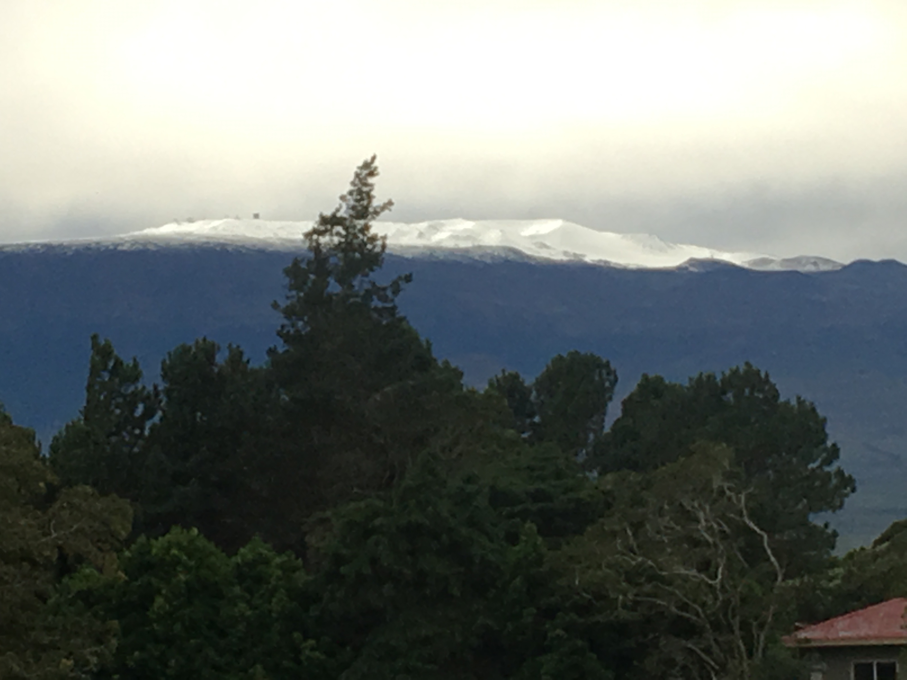

WAIPIO VALLEY INFORMATION
The View from the Waipiʻo Valley Lookout towards Hilo. Waipiʻo Valley is a valley located in the Hamakua District of the Big Island of Hawaiʻi. "Waipiʻo" means "curved water" in the Hawaiian language.
It was the capital and permanent residence of many early Hawaiian aliʻi (kings) up until the time of King ʻUmi. A place celebrated for its nioi tree (Eugenia reinwardtiana) known as the "Nioi wela o Paʻakalana" (The burning Nioi of Paʻakalana). It was the location of the ancient grass palace of the ancient kings of Hawaii with the nioi stands. Kahekili II raided Waipiʻo in the 18th century and burned the four sacred trees to the ground.

The valley floor at sea level is almost 2,000 ft (610 m) below the surrounding terrain. A steep road leads down into the valley from a lookout point located on the top of the southern wall of the valley. The road gains 800 vertical feet (243.84 m) in 0.6 miles (0.9 km) at a 25% average grade, with steeper grades in sections. This is a paved public road but it is open only to 4 wheel drive vehicles. It is the steepest road of its length in the United States and possibly the world. The shore line in the valley is a black sand beach, popular with surfers. A few taro farms are located in the valley. Several large waterfalls fall into the valley to feed the river which flows from the foot of the largest falls at the back of the valley out to the ocean.

A foot trail called Waimanu or Muliwai Trail leads down a steep path to the Waimanu Valley, which is not accessible by automobile. At upper end of the valley, Waimanu Gap at 2,089 feet (637 m) elevation leads to the south end of Waimanu Valley. Black sand is sand that is black in color. One type of black sand is a heavy, glossy, partly magnetic mixture of usually fine sands, found as part of a placer deposit. Another type of black sand, found on beaches near a volcano, consists of tiny fragments of basalt.

While some beaches are predominantly made of black sand, even other colour beaches (e.g. gold and white) can often have deposits of black sand, particularly after storms. Larger waves can sort out sand grains leaving deposits of heavy minerals visible on the surface of erosion scarps.
In Hawaiian mythology, Mauna Kea was the home of snow goddess Poliʻahu, and the place of several other legends.Many small communities sprang up around sugarcane plantations which were operating along the Hāmākua Coast through most of the 20th century. The demand for sugar cane rose after the Reciprocity Treaty of 1875 reduced tariffs to the United States. The first mill processed the crop planted in 1876. Early investors included Claus Spreckles, Samuel Parker, and Theophilus Harris Davies. The Hāmākua Mill Company, Honokaʻa Sugar, Kaiwiki Sugar, Kukaiau Plantation Company, Laupāhoehoe Sugar, Paʻauhau Sugar Plantation and Pacific Sugar Mill were eventually consolidated into the Hāmākua Sugar Company. The Hāmākua district was an endemic region of bubonic plague in the early part of the 20th century. From 1910 to 1949, there were 112 confirmed cases of the disease, of which 109 were fatal. The Board of Health of the Territory of Hawaii, in combined efforts with the local sugar plantations, engaged in a vast rat extermination campaign. Despite these efforts, plague remained an enzootic disease in the region up until 1957. It is unclear why plague eventually left the area. Sugar plantations declined and were consolidated in the latter half of the 20th century. About 10% of the population was lost each decade following 1970. The Hamakua Sugar Company had its final harvest in 1994. After years of high unemployment, the economy shifted to small diversified farms. Crops include macadamia nuts, papaya, mango, coffee, and other tropical fruits. Irrigation canals known as the Upper Hamakua Ditch and Lower Hamakua Ditch had been built in 1910, and were repaired in 2001. While virtually all of the pre-existing native forest below altitudes of several thousand feet was removed by sugarcane cultivation, several remnants of native forest can be found. Where the terrain of gulches such as Laupāhoehoe, Ka'awali'i, and Maulua was too steep for cultivation, for example, the original forest remains largely intact. There are also protected areas such as Kalōpā State Recreation Area, which has preserved a small stand of native trees and their understory compatriots. Other protected areas include the Hamakua, Hauola, Manowaialee, and Mauna Kea State Forest Reserves, Hakalau Forest National Wildlife Refuge, and Mauna Kea Ice Age Reserve, all on Mauna Kea, and the Mauna Loa Forest Preserve on Mauna Loa.
Monument to deaths in the 1946 tsunami at Laupāhoehoe The Hawaii Consolidated Railway was extended to connect the Hāmākua sugarcane plantations to the harbor at Hilo Bay. On April 1, 1946 a tsunami caused by an Aleutian Islands earthquake damaged the railroad so much it abandoned its tracks. Several years later the state of Hawaii acquired the right-of-way, and by 1960 realigned the Hawaii Belt Road (Route 19, known as the Māmalahoa Highway) to shorten the driving time. In many places the older highway (Old Māmalahoa Highway) follows a more scenic, but twisted route that resembles the more well-known Road to Hana on Maui.
Popular recreation sites along the Māmalahoa Highway include Akaka Falls, Umauma Falls, Hawaii Tropical Botanical Garden, World Botanical Gardens and Kolekole Beach Park. The Saddle Road (Route 200) travels from Hilo through the inland part of the district, providing access to the high plateau between Mauna Loa and Mauna Kea, and roads to the astronomical observatories on the summit of Mauna Kea and the NOAA observatory high on Mauna Loa. The US military conducts live-fire training at the Pohakuloa Training Area along this road.
Hāmākua's coast is approximately 50 miles (80 km) long, along the Pacific Ocean around 19°59′36″N 155°14′25″WCoordinates: 19°59′36″N 155°14′25″W, ending at Waipiʻo Valley and the uninhabited Waimanu Valley. The term Hāmākua Coast is used loosely to describe the region between Hilo and Waipiʻo, although the modern Hāmākua zoning district begins north of Laupāhoehoe and west of ʻŌʻōkala. The rainfall due to the prevailing northeasterly tropical trade winds produces steep erosional valleys and cliffs, showing evidence of frequent landslides. The lush vegetation and lack of sandy beaches contrasts sharply with other regions of the island.

Hamakua Coast north of Honoka'a town.The dominating geographic feature in Hāmākua is the volcanic mountain Mauna Kea. The district stretches south through the central plateau to the summit of Mauna Loa. Hāmākua was one of the six traditional districts of the island in ancient Hawaii (known as moku). To the north beyond Waipiʻo Valley is the Kohala district, with the older volcano Kohala mountain. According to Hui Mālama i ke Ala ʻŪlili, Hāmākua is known for its "steep mountain trails."

The information booth is open 7 days a week,7am to 3pm, with an info officer to answer questions and give advice for visitors. Waipio Valley Road is a short steep road in the Big Island of Hawai, restricted to 4x4. It is the steepest road of its length in the United States. The road is steep enough to destroy brakes on the way down, with some 45% grade sections. The road is difficult and it’s a nightmare in the wet or dark (or both). It links Waipio Overlook at the western end of Honokaa-Waipio Road (state route 240), down into the Waipio Valley, in the Hamakua District. While the road is now paved and only about ¾ mile long, the 25% average grade (said to be up to 45% at some points), taking the road about 900 feet down to the valley floor, is steep enough to destroy brakes on the way down, and stall engines on the way up. The road is therefore restricted to 4x4s (which you'll need anyway to navigate the unpaved roads on the valley floor), and hikers with strong legs. This road is not for the faint at heart. It is a forty-five degree angle all the way down and the only way to make it is with 4WD in low gear. It is a single lane road and folks going down have to yield to folks coming up. This road has innumerable twists and turns. A paved, one-lane road does provide 4-wheel drive access, only. It is most likely one of the steepest roads in the world with a 25% grade for the entirety of its 900-foot descent, in less than one-mile. Do not even think about taking a regular 2-wheel drive car, as you will burn up your brakes on the way down. As a courtesy, at the very few wider locations in this extremely narrow road, downhill traffic yields to uphill traffic. Once on the valley floor, there are no paved roads. Non-4x4 vehicles are prohibited on this road, even though it is paved. Vehicles must descend in first gear, low range, to avoid brake failure. Driving non-4x4 vehicles into the valley can be, and has been, fatal. Survivors may also be unable to get their non-4x4 vehicles out of the valley without an extremely expensive tow. If you don't have a 4x4, there are tours that will take you into the valley and back, or you can hike on the road (a popular option, at least for the young and healthy).